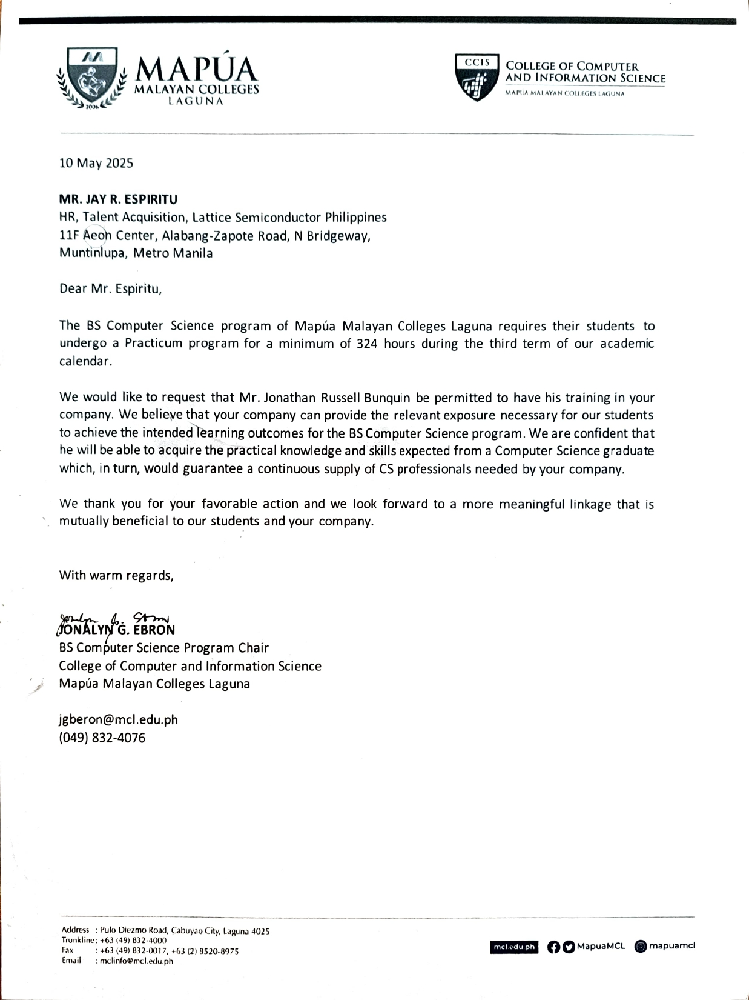
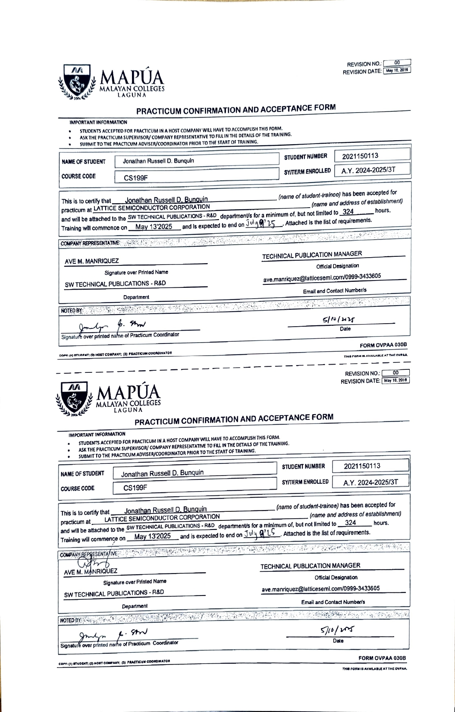

Work Exposure
On-the-Job Training at Lattice Semiconductor Philippines
Overview of the Practicum Engagement:
Lattice Semiconductor is the low-power programmable leader. The company solves customer problems across the network, from Edge to Cloud, in communications, computing, industrial, automotive, and consumer markets.
During my internship, I worked on dashboard trackers, enhanced Radiant Online Help software, and developed Python scripts to automate images for their application. I completed a total of 324 hours.
Presentation of Output


Synthesis of the Practicum Engagement
I learned a lot during my practicum. I improved in communication and collaboration, which boosted my people skills. I also discovered that learning never stops — even in familiar tools and tasks. I explored new technologies like WebWorks ePublisher, Perforce, Linux/Unix systems, and Adobe Acrobat.
I also observed how quickly-paced the corporate environment is. Tasks are expected to be done immediately. Though I sometimes needed extra time to learn, my father's advice helped — “Don't wait for instructions. Take initiative.” This mindset allowed me to show my willingness to contribute.
One challenge I faced was the delay in access to tools and accounts, which caused some stress. Despite that, I gave my best and took away many life and work lessons from this experience.
Appendices
Endorsement Letter
Practicum Acceptance
Liability Waiver

© Jonathan Bunquin